Lab 7 evidence
Task 1 (part 1): The first task for lab 7 required me to produce a long scheduling algorithm in Visual Studio; to do this I had to create a Job class. In the class, I created parameters for ID (the person), arrivalTime, executionTime and priority. Once I had defined the job class, I produced a new list in my main function using the parameters in the Job class. All the jobs then get compared against each other by using their arrival time; the order of the jobs will be from the shortest to the highest arrival time. Finally, the jobs all have their priority checked against the minimum priority requirement of 5; if they do not pass the requirement they are excluded from the final list.
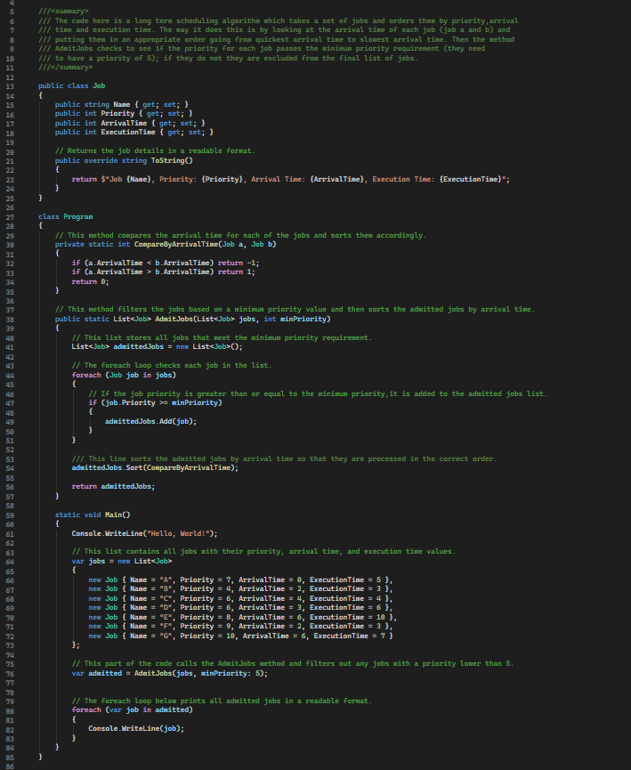
Task 1 (part 2): For part 2, I had to create another version of the scheduling program except this is the Short-Term Scheduling algorithm where the largest difference was that there was no priority check for any of the processes. The reason that the Short-Term Scheduling algorithm does not perform a priority check is because FCFS scheduling focuses on completing processes in the order they arrive rather than filtering them based on importance and because of this, the Long-Term Scheduling algorithm takes longer to perform the same function. However, a downside to short-term scheduling is that processes with long execution times can delay newer processes from completing quickly. Furthermore, the Gannt chart provided shows that each process is completed as it enters the system and one process will not complete before the previous process has completed due to the lack of priority checks; since every process must complete before the next one starts, the Gantt chart is easy to read and understand.
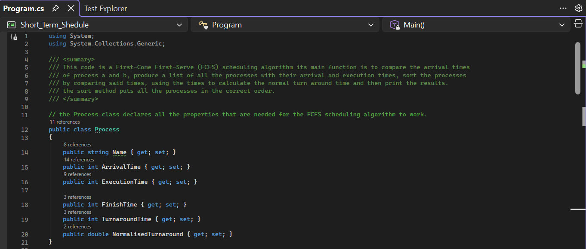
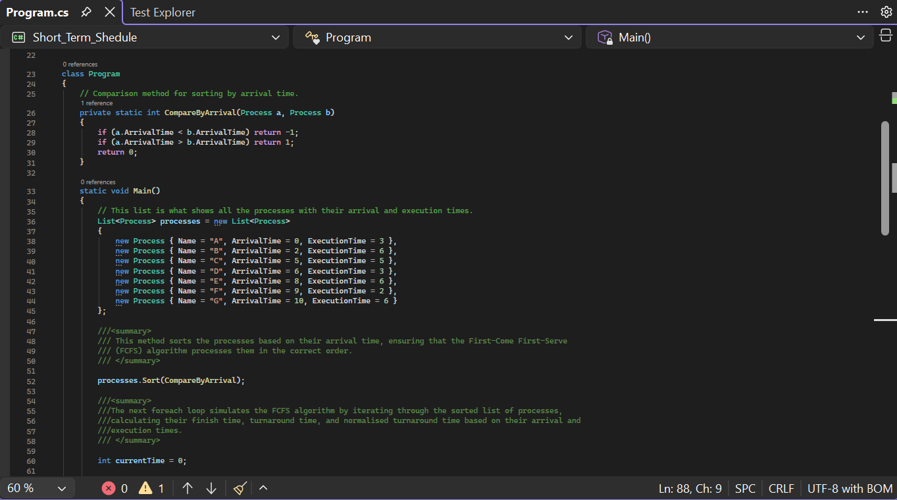
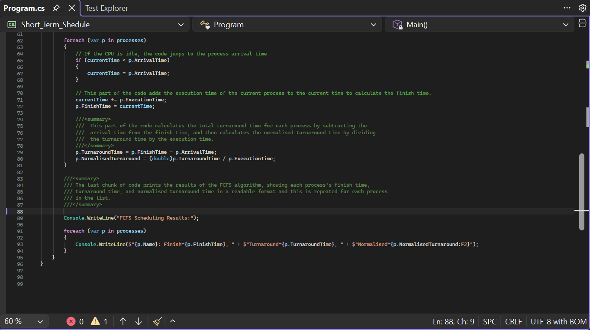
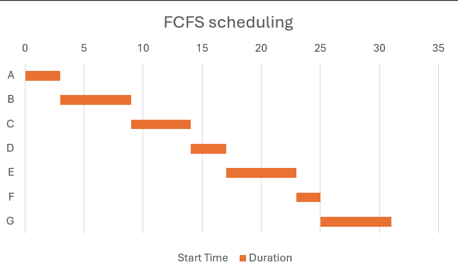
Task 2:
The second task required me to produce a round robin scheduling algorithm to show the efficiency of processes in different time slices (these are defined chunks of processing time). To complete this program, I produced an overall Round Robin method that had the parameters (List 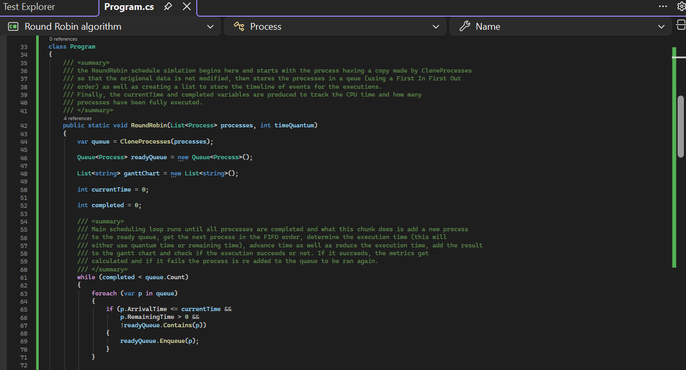 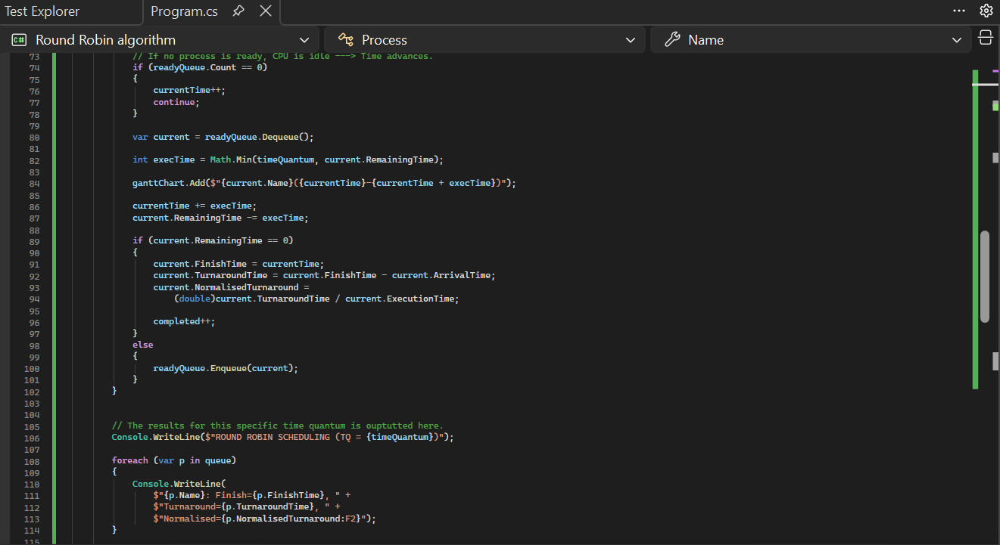 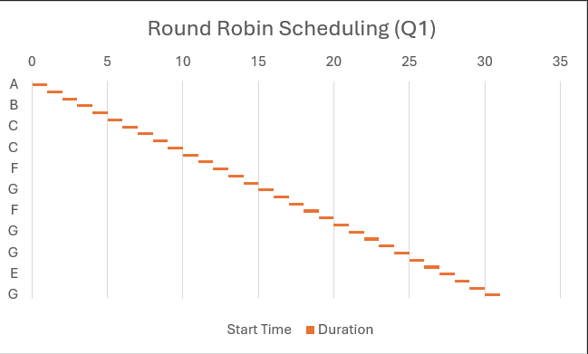 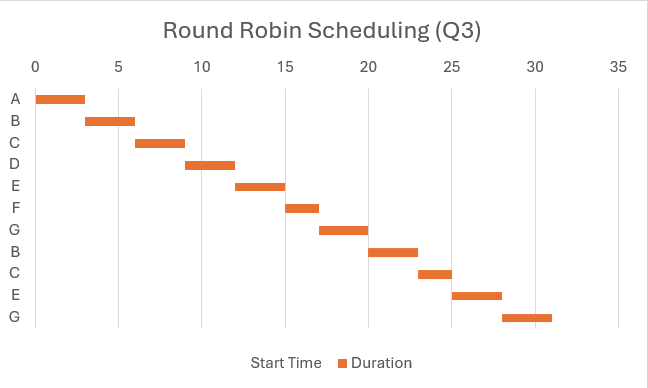 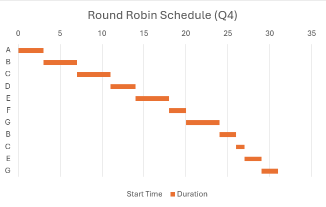 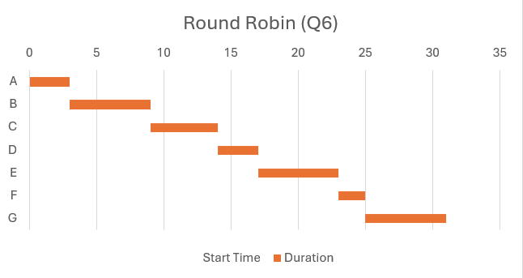
Task 3: For task 3 I had to add a priority system to the round robin scheduling algorithm, and this is because the algorithm previously treated all processes equally. Due to this the CPU would work on a process as it was given to it. However, the issue with this is that there could be some processes that need to be completed quicker than others. Using Round Robin 1 and 6 as examples, process "E" will be completed the quickest due to having a priority of 10 and a process "F" will be completed last due to it having priority 3. The way that I made this priority system was by creating a new priority variable to be used in the code, giving all the processes in the code a new priority, replacing the FIFO queue selection with a process to pick the process with the highest priority (.OrderByDescending(p => p.Priority) and then performs the FIFO check and finally producing a priority method to check the processes and the priority they have. This logic is backed up by the Gantt charts as unlike the regular Round Robin (Q1), priority Round Robin (Q1) shows that process "E" gets repeated 2 times and then does not get repeated whereas regular Round Robin (Q1) must go through 4 other processes before it is able to reach process E again. Looking at process "E's" get priority, we can see that it has priority 10; this proves that the code is now completing processes based on the priority they have been given.
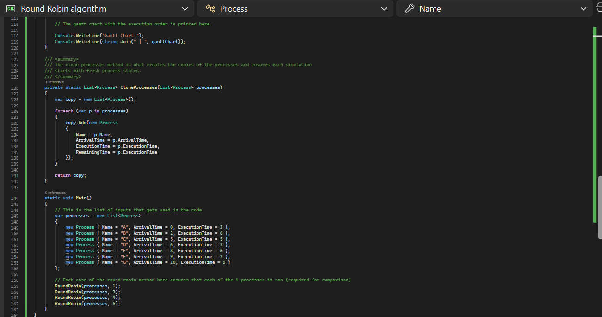
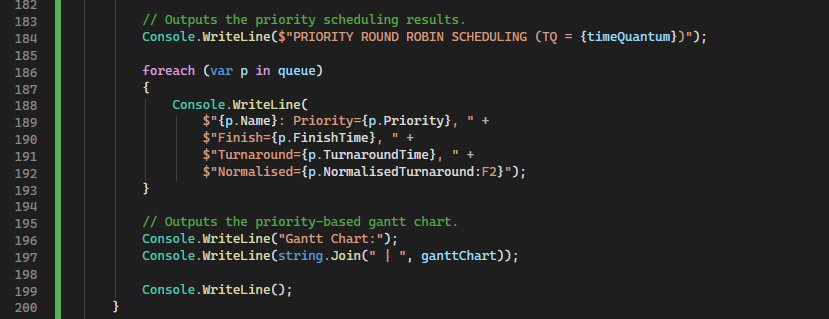
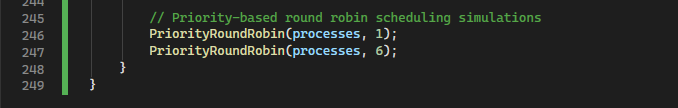


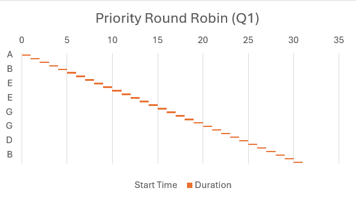
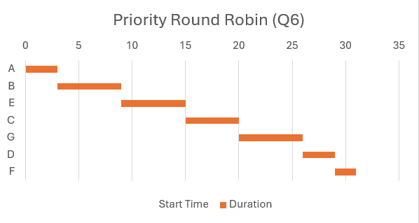